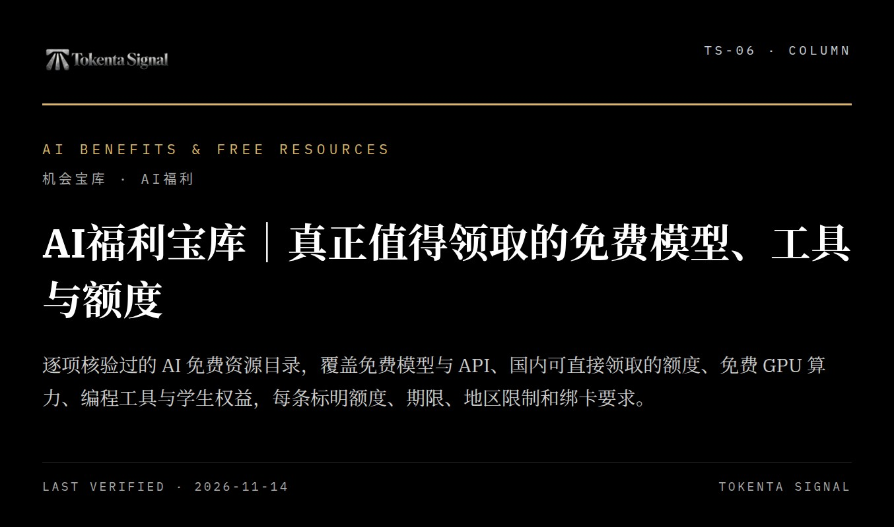
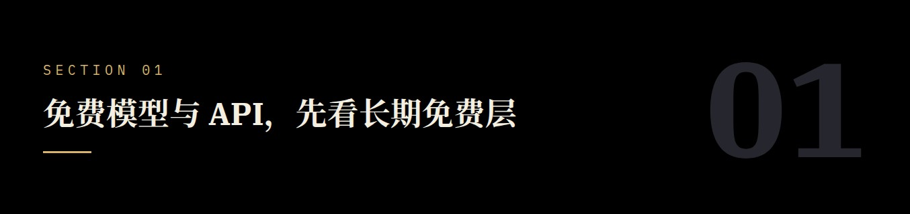
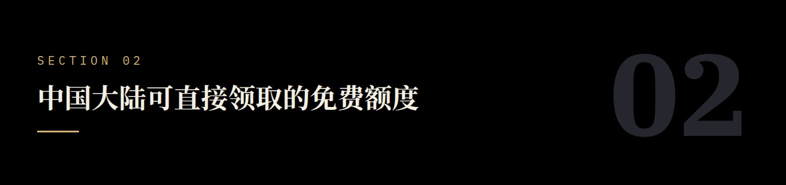
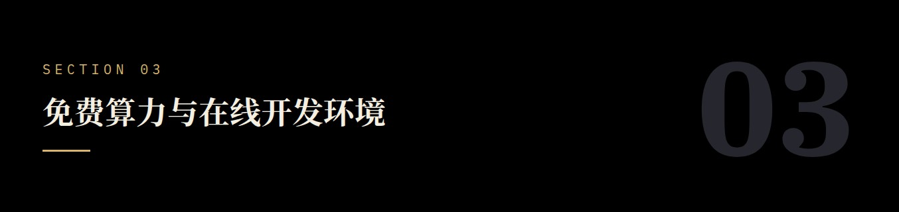
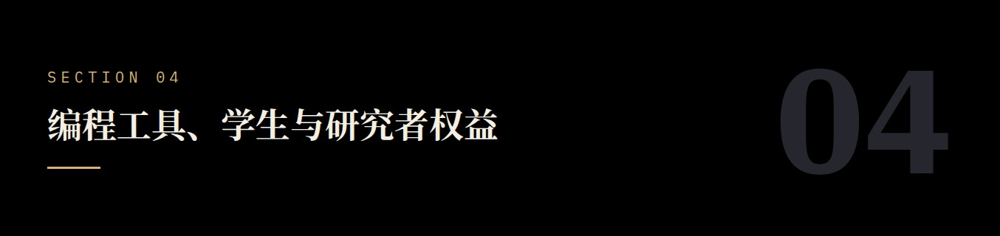

AI 免费资源的信息差，一半在发现，另一半在核验。网上流传的免费清单经常混着已经下线的模型、早已结束的活动和需要绑卡才能开通的试用，照着旧清单逐个注册，浪费的时间比省下的钱多。这个栏目存在的理由，是把核验这一步提前做完。
本栏目只收录在官方页面逐项核对过的资源。每条资源统一记录免费权益、使用额度、有效期限、地区限制、是否需要信用卡和是否需要身份验证，最后附核验日期。查不到官方口径的项目不收录，官方口径含糊的字段直接标注待核验。免费政策调整频繁，领取前仍建议点开官方入口再确认一次当日规则。

长期免费层和限时试用是两种东西。前者在官方定价里长期存在，按速率限制使用，后者到期自动转成付费。本节三个平台都属于长期免费层，差别在模型构成和限流方式。Gemini 的免费层胜在模型本身是厂商旗舰系列的 Flash 版本，输入和输出 token 都不收费，代价是免费层内容会被用于改进 Google 产品，敏感数据不适合放进去。Groq 的特点是推理速度，限流数字在官方文档里写得最清楚，适合做延迟敏感的原型。OpenRouter 的价值在聚合，一个接口可以试多家模型，免费模型的名单轮换较快，接入前要先看当日列表。三个平台的共同限制是地区，官方服务范围都不覆盖中国大陆，大陆用户需要优先看下一节。
设计与音视频类的免费资源很少单独成平台，多半藏在综合平台的模型名单里。语音转文字可以看 Groq 免费计划里的 Whisper，官方限流表给到每日 2000 次请求。文生图和文生视频在国内平台更成体系，智谱的免费名单里各有一个专门型号，下一节会具体写。找这类资源时先看它属于长期免费层还是限时活动，标注不清的宁可先小量试用，不要直接接进生产流程。
Google AI Studio 与 Gemini API 免费层
主要功能 在 AI Studio 网页端试用 Gemini 模型，或用 API Key 调用 Gemini API 做开发
免费权益 限定模型免费使用，输入与输出 token 均不收费，含 AI Studio 网页端访问
使用额度 按模型分别限流，官方定价页未公布统一的每日次数，具体数值在 AI Studio 的 Rate Limit 页面查看，待核验
有效期限 长期免费层，无到期日，模型名单会随官方调整
地区限制 官方可用地区名单未列中国大陆，名单含台湾等地区，大陆不在官方服务范围内
是否需要信用卡 免费层不需要，升级到付费层才需要绑定账单账户
是否需要身份验证 需要 Google 账号
最后核验日期 2026-11-14
官方定价页确认 Flash 与 Flash-Lite 等型号免费层输入输出免费，并注明免费层内容会用于改进产品。
Groq 免费计划
主要功能 高速推理 API，主打开源模型的低延迟调用，兼容 OpenAI 接口格式
免费权益 免费计划内调用指定模型不收费，含文本模型与 Whisper 语音转文字
使用额度 官方限流表标注为 Developer plan 的基础限额。以 gpt-oss-120b 为例，每分钟 30 次请求，每日 1000 次，每分钟 8000 token，每日 20 万 token，限额按组织计算
有效期限 长期免费计划，官方文档未设结束日期
地区限制 官方文档未公布支持地区清单，中国大陆直连可用性待核验
是否需要信用卡 免费计划不需要，升级到 Developer 付费计划才需要添加付款方式
是否需要身份验证 需要注册 GroqCloud 账号并创建 API Key
最后核验日期 2026-11-14
官方限流文档逐项列出各模型限额，该表官方口径为 Developer plan 基础限额，并注明限额按组织而非按单个 Key 计算。
OpenRouter 免费模型
主要功能 聚合多家厂商模型的统一 API 网关，一个 Key 切换不同模型
免费权益 模型 ID 以 :free 结尾的变体按 token 零价调用，另有免费模型路由自动挑选可用模型
使用额度 每分钟 20 次请求，未购买过额度时每日 50 次，累计购买满 10 个额度后每日上限升至 1000 次
有效期限 长期机制，免费模型名单轮换频繁，以领取当日的模型列表为准
地区限制 官方文档未公布地区清单，中国大陆可用性待核验
是否需要信用卡 不需要，零购买状态下即可用每日 50 次的免费档
是否需要身份验证 需要注册账号并创建 API Key
最后核验日期 2026-11-14
官方限额文档确认免费变体的限流结构，账户余额为负时免费模型也会被拦截。

大陆用户最稳妥的免费资源来自国内厂商的官方平台，注册、实名和支付都在境内完成，没有地区墙。智谱的特点是把整批 Flash 系列定为免费模型，覆盖文本、视觉理解、文生图和文生视频四类，名字带 FlashX 的是收费高速版，选型时不要混淆。阿里云百炼走的是新人额度路线，旗舰模型也给额度，代价是有效期只有 90 天，而且额度用完默认自动转为按量付费。开通百炼的第一件事，是去控制台把免费额度用完即停的开关打开，避免试用期结束被扣费。这两家构成了本栏目国内部分的基本盘，后续每期会复查免费名单的增减。
智谱开放平台 BigModel 免费模型
主要功能 国产大模型 API 平台，接口兼容 OpenAI 格式，覆盖文本、多模态、图像与视频生成
免费权益 官方模型概览标注一批免费模型，含 GLM-4.7-Flash 文本模型、GLM-4.6V-Flash 视觉模型、CogView-3-Flash 文生图与 CogVideoX-Flash 文生视频
使用额度 免费模型按并发限流，官方未公布每日 token 上限，具体并发数在控制台查看，待核验
有效期限 免费模型为平台现行定价口径，无单次领取期限，名单可能随版本迭代调整
地区限制 中国大陆可直接注册使用
是否需要信用卡 不需要，国内平台使用人民币账户体系
是否需要身份验证 需要注册账号并完成平台实名认证
最后核验日期 2026-11-14
官方模型概览页逐项标注免费模型，GLM-4.7-Flash 上下文 200K，最大输出 128K。
阿里云百炼新人免费额度
主要功能 阿里云大模型服务平台，提供通义千问系列及多家第三方模型的 API 调用
免费权益 首次开通百炼自动发放新人免费额度，覆盖千问旗舰与主力模型，可用于 API 实时调用测试
使用额度 每个有额度的模型单独一份，常见为 100 万 Token，输入与输出共用，名单以官方价格页免费额度一列为准
有效期限 90 天，自开通百炼、模型发布、申请通过三者中较晚之日起算，过期作废
地区限制 免费额度仅在华北 2 北京地域发放，其他地域无免费额度，中国大陆用户可正常领取
是否需要信用卡 不需要，但额度用完默认自动转为按量付费，需在控制台手动开启免费额度用完即停
是否需要身份验证 需要先完成阿里云实名认证，未实名不发放免费额度
最后核验日期 2026-11-14
官方价格页逐模型标注免费额度与 90 天有效期，并明确只有华北 2 地域有额度。

没有本地显卡时，免费算力决定了能不能真正动手跑模型。这一类资源给的多是动态配额，写死固定额度的反而少见。Kaggle 的规则写得最透明，每周 GPU 时长明示，适合有计划地安排训练任务。Colab 的规则最模糊，官方明确说限额不公布且会浮动，胜在打开就能用，适合教学和临时实验。Hugging Face 的免费形态已经变了，旧的免费推理额度不再是重点，现在值得用的是 Spaces 的免费 CPU 托管和 ZeroGPU 的每日免费 GPU 分钟数，适合把小模型做成可分享的演示页。三者的共同点是资源不保证随时可用，赶截止日期的任务不要把宝全押在免费算力上。
Kaggle Notebooks 免费 GPU
主要功能 在线 Notebook 环境，带公开数据集与竞赛生态，适合训练与实验
免费权益 免费使用 NVIDIA Tesla P100 GPU 运行 Notebook
使用额度 每周 GPU 配额 30 小时，有时更高，取决于供需，每周重置
有效期限 长期免费机制，按周循环发放
地区限制 官方文档未公布地区清单，中国大陆可用性与手机号验证要求以注册页面提示为准，待核验
是否需要信用卡 不需要
是否需要身份验证 需要注册 Kaggle 账号
最后核验日期 2026-11-14
官方 GPU 使用文档明示每周 30 小时配额，并提醒交互会话闲置 60 分钟会超时回收。
Google Colab 免费层
主要功能 托管 Jupyter Notebook 服务，免配置，适合机器学习教学与快速实验
免费权益 免费使用计算资源，包括 GPU 与 TPU
使用额度 官方明确不公布限额，额度动态浮动且不保证可用，免费层 Notebook 单次最长运行 12 小时
有效期限 长期免费服务，无固定到期日
地区限制 Google 服务未在中国大陆官方提供，大陆不在服务范围内
是否需要信用卡 不需要
是否需要身份验证 需要 Google 账号
最后核验日期 2026-11-14
官方 FAQ 确认免费使用 GPU 与 TPU，同时明确资源不保证、限额不公开。
Hugging Face Spaces 与 ZeroGPU
主要功能 托管和分享机器学习演示应用，也可直接使用社区已发布的模型演示
免费权益 Spaces 的 CPU Basic 托管免费，ZeroGPU 让 Gradio 应用按需调用共享 GPU，定价页两项均标为免费
使用额度 免费账号每日 5 分钟 ZeroGPU 配额，未登录用户每日 2 分钟，配额自首次使用起 24 小时重置
有效期限 长期免费机制，每日配额循环
地区限制 官方文档未公布地区清单，中国大陆可用性待核验
是否需要信用卡 不需要，超出配额的付费功能才涉及预付额度
是否需要身份验证 使用演示无需账号，自建 ZeroGPU Space 需要邮箱已验证且账号注册满 30 天，最多托管 2 个
最后核验日期 2026-11-14
官方 ZeroGPU 文档列明各档每日配额与自建条件，硬件为 RTX Pro 6000 Blackwell，显存 48GB 起。

编程工具的免费层适合日常轻量使用，重度开发很快会碰到月度上限，先想清楚自己的调用量再决定是否依赖它。学生权益是另一类价值洼地，验证一次学生身份，可以解锁一整包工具、云额度和课程，GitHub 的学生包是目前覆盖面最广的一份，其中 Azure 的 100 美元额度明确不需要信用卡。本栏目后续会单独追踪学生与研究者通道，包括各平台的教育计划和学术优惠的变化。历史免费资源会沉淀进栏目归档，归档只保留当时的核验记录和规则说明，过期条目会明确标注已失效，方便回看一项福利的完整生命周期。
限时活动是这个栏目更新最频繁的部分。各家平台的新模型发布、节日活动和生态合作经常附带短期免费额度，窗口短则几天，长则一两个月。本栏目的处理方式是单独成期发布，标题写清截止日期，正文逐项标注领取条件与自动续费风险。活动结束的那一期会同步更新状态，把入口文章里过期的条目降级到归档区。读者看到任何没有写截止日期的限时福利，都值得多问一句来源。
GitHub Copilot Free
主要功能 在 IDE 与 GitHub 中提供代码补全、对话和智能体辅助的编程工具
免费权益 个人开发者免费使用限定功能，无需订阅，无需付费
使用额度 每月 2000 次代码补全，对话与智能体功能共用一份 AI 额度，官方未公布额度具体数值，待核验，模型只能用自动选择
有效期限 长期免费计划，额度每月重置
地区限制 面向个人开发者，通过组织或企业获得 Copilot 的账号不适用，地区以 GitHub 服务范围为准
是否需要信用卡 不需要
是否需要身份验证 需要 GitHub 个人账号
最后核验日期 2026-11-14
GitHub 官方计划文档确认 Free 每月 2000 次补全上限与自动模型选择限制。
GitHub 学生开发者包
主要功能 面向在校学生的开发者权益包，聚合云服务、开发工具、域名与课程资源
免费权益 含学生期间免费的 GitHub Pro 与 Copilot Student，后者补全不限量，另有 Azure 25 项以上云服务与 100 美元额度、JetBrains 全家桶学生订阅、Heroku 每月 13 美元共 24 个月等单项权益
使用额度 按各合作方单项规则执行，多数权益与学生身份存续期绑定，到期或毕业后失效
有效期限 学生身份有效期内可用，部分单项有固定月数，以各权益页为准
地区限制 面向全球在校学生申请，个别合作方权益可能有地区差异，领取时逐项确认
是否需要信用卡 主包不需要，Azure 学生权益官方标注无需信用卡
是否需要身份验证 需要完成学生身份验证，通常用学校邮箱或在读证明材料
最后核验日期 2026-11-14
官方权益页逐项列出合作方优惠，Copilot Student 与 Azure 学生额度的口径均来自该页。

01 先按地区筛，大陆直连需求优先用智谱与阿里云百炼，海外平台先确认自己所在地区在官方服务范围内。
02 再按期限筛，长期免费层适合放进日常工作流，90 天类新人额度适合集中做一次模型评测或原型验证。
03 领取百炼额度后，第一时间去控制台开启免费额度用完即停，避免额度耗尽后自动按量扣费。
04 每条资源都附最后核验日期，超过一个月的条目在使用前先打开官方入口复核当日规则。
05 发现已失效或规则变化的福利，可通过公众号后台留言反馈，栏目会在下一期更新核验状态。

SOURCES · 来源与核验
[1] Gemini API 官方定价页，免费层口径与可用模型
[3] Groq 官方限流文档，Developer plan 基础限额表
[4] OpenRouter 官方限额文档，免费变体限流规则
[6] 阿里云百炼官方模型价格页，免费额度与 90 天有效期
[8] Google Colab 官方 FAQ，免费层与资源限制说明
[9] Hugging Face 官方 ZeroGPU 文档，每日配额与自建条件
[10] GitHub 官方 Copilot 计划文档，Free 限额
[11] GitHub 学生开发者包官方权益页
LAST VERIFIED · 2026-11-14
TOKENTA SIGNAL
Extracting signals from the noise. 本栏目内容来自公开来源并标注核验日期，不构成任何投资建议。
signal.tokenta.space · team@tokenta.space